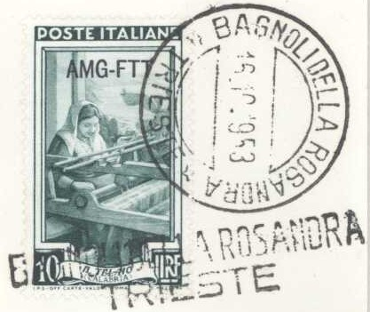
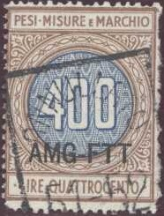
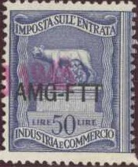
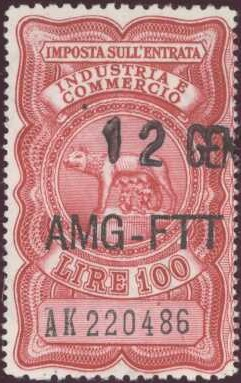

Overprint Type I
A.M.G. F.T.T. = Allied Military Government - Free Territory Trieste
Return To Catalogue - Italy overview
Note: on my website many of the
pictures can not be seen! They are of course present in the
catalogue;
contact me if you want to purchase the catalogue.
Zone A, including Trieste was put under Allied administration. Zone B, (north west of Istria) was governed by Yugoslavia. In 1954, Zone A became part of Italy and Zone B became part of Yugoslavia. Zona A issued stamps of Italy with overprint 'A.M.G. F.T.T.' in several types. Zone B used stamps of Yugoslavia with overprint 'STT VUJA' or 'STT VUJNA'.
Overprint Type I
Overprint type I ('A.M.G. F.T.T.' in two lines)
25 c blue (hand holding torch of freedom)
50 c violet (hammer breaking chain)
1 L green (hand planting tree)
1.20 L brown (design as 25 c)
2 L brown (man pruning tree)
3 L red (design as 25 c)
4 L orange (design as 25 c)
5 L blue (family with justice scale in background)
6 L violet (design as 1 L)
8 L green (design as 50 c, 1948)
10 L black (design as 50 c)
10 L red (design as 5 L, 1948)
15 L blue (design as 1 L)
20 L violet (design as 25 c)
30 L blue (design as 25 c, 1948)
Overprint type II

Overprint Type II
25 L green (broken tree with goddess of Italia in background, larger size) 50 L brown (design as 25 L) Overprint type III
Overprint Type III
100 L red (family design, but larger size) Overprinted 'A.M.G. F.T.T.' in an arc, posthorn with '1948' and 'TRIESTE' (1948)
8 L green (red overprint)
10 L red (red overprint)
30 L blue (red overprint)
Overprint type IV ('AMG-FTT' in one line, 1949)
1 L green (hand planting tree) 2 L brown (man pruning tree) 3 L red (hand holding torch of freedom) 5 L blue (family with justice scale in background) 6 L violet (design as 1 L) 8 L green (hammer breaking chain) 10 L red (design as 5 L) 15 L blue (design as 1 L) 20 L violet (design as 3 L) 25 L green (broken tree with goddess of Italia in background, larger size) 50 L brown (design as 25 L 100 L red (family design, but larger size)
3 L brown 4 L lilac 5 L blue 6 L green 8 L brown 10 L orange 12 L dark green 15 L grey 20 L red 30 L blue 50 L violet 100 L grey Express stamp 35 L violet
15 L green
15 L brown
20 L grey
20 L brown
20 L grey
20 L blue
50 L blue
5 L red and yellow 15 L green 20 L lilac and yellow 50 L blue
100 L brown
20 L red
20 L violet
5 L green 15 L violet 20 L brown
20 L violet
20 L red
20 L green
20 L red 50 L blue
20 L blue
20 L violet
20 L brown
20 L violet
20 L brown
Similar stamps were issued in 1951 and 1952.
20 L green 55 L blue
20 L violet 55 L blue
20 L green
20 L green
20 L blue
20 L olive and brown
20 L violet 55 L blue
20 L black and yellow
5 L lilac and green 20 L brown and green 55 L blue and brown
20 L brown

Overprined 'AMG-FTT'
50 c blue ('LA FUCINA VALLE D'AOSTA')
1 L blue ('L'OFFICINA PIEMONTE')
2 L black ('IL CANTIERI LOMBARDIA')
5 L grey ('IL TORNIO TOSCANA')
6 L brown ('IL TOMBOLO ABRUZZI EMOLISE')
10 L green ('IL TELAIO CALABRIA')
12 L blue ('IL TIMONE VENETO')
15 L blue ('LO SCALO LIGURIA')
20 L violet ('LA SCIABICA CAMPANIA')
25 L light brown ('LE ARANCE SICILIA')
30 L lilac ('LA VENDEMMIA PUGLIA')
35 L red ('LE OLIVE BASILSCATA')
40 L brown ('IL CARRIO A VINO LAZIO')
50 L violet ('LE GREGGI SARDEGNA')
55 L blue ('L'ARATRO UMBRIA')
60 L red ('IL RACOLTO MARCHE')
65 L green ('LA CANAPA EMILIA ROMAGNA')
100 L brown ('IL GRANOTURCO TRIULI VENEZIA GUILIA')
200 L olive ('IL LEGNAME TRENTINO ALTO AORTE')
Overprinted 'AMG-FTT FIERA TRIESTE 1951'
6 L brown
20 L violet
55 L blue
Overprinted 'FIERA DI TRIESTE AMG FTT 1953'
10 L green (red overprint) 25 L light brown (green overprint) 60 L red (green overprint)
20 L grey
20 L lilac and red 55 L blue
20 L blue
20 L brown 55 L blue
5 L brown and red 10 L light blue and red 15 L blue and red
20 L violet
20 L blue
20 L violet 55 L blue
20 L brown and red-brown
20 L green and black 55 L blue and lilac
25 L green
25 L brown
25 L blue
In 1952 a similar stamp was issued: 25 L green.
10 L grey and black 25 L red and blue 60 L blue and brown
10 L green
25 L violet
10 L green 25 L green
10 L green and lilac 25 L dark brown and brown 60 L blue and green
25 L grey
25 L orange 60 L blue (overprint in grey) 80 L red
25 L green and brown
25 L black and brown
60 L blue
25 L black and brown 60 L black and blue
25 L blue
25 L grey and yellow
25 L blue and red
25 L green and red
25 L green
In 1951 a similar stamp was issued: 25 L blue.
60 L violet
25 L black
60 L blue
25 L grey
25 L black and blue
25 L brown
25 L brown
10 L green ('AMG-FTT' horizontally)
25 L black ('AMG' and 'FTT' vertically)
60 L black and blue ('AMG' and 'FTT' vertically)
25 L red
25 L violet
25 L violet
25 L brown
25 L brown and red-brown

5 L grey 10 L red 12 L green 13 L lilac 20 L brown 25 L violet 35 L red 60 L blue 80 L light brown
25 L grey
25 L olive 60 L blue
25 L blue and orange 60 L blue and lilac
25 L brown and blue
25 L blue and brown
10 L brown and light brown (Siena) 12 L grey and blue (Rapallo) 20 L brown and orange (Gardone) 25 L green (Cortina d'Ampezzo) 35 L brown and yellow (Taormina) 60 L blue (Capri) Overprinted 'FIERRA DI TRIESTE 1954' 25 L green 60 L blue
25 L brown 60 L blue
25 L violet 60 L green
25 L green
25 L lilac
25 L brown and black
25 L brown 60 L green
25 L blue
25 L green and red
25 L red 60 L blue
'A.M.G. F.T.T.' on parcel stamp
1 L olive 2 L light blue 3 L orange 4 L grey 5 L lilac 10 L violet 20 L brown 50 L red 100 L blue 200 L green 300 L brown 500 L olive
1 L olive 2 L light blue 3 L orange 4 L grey 5 L lilac 10 L violet 20 L brown 30 L lilac 50 L red 100 L blue 200 L green 300 L brown 500 L olive ? L ....
40 L orange 50 L blue 75 L olive 110 L lilac
1 L orange 5 L violet 10 L blue 20 L red
1 L orange 2 L green 3 L red 4 L olive 5 L violet 6 L blue 8 L violet 10 L blue 12 L light brown 20 L lilac 50 L light blue
1 L orange 2 L green 3 L red 5 L violet 6 L blue 8 L violet 10 L blue 12 L light brown 20 L lilac 25 L brown 50 L light blue 100 L light brown 500 L blue and red
Overprinted 'A.M.G. F.T.T' (overprint Type III)
1 L black 2 L blue 5 L green 10 L red 25 L olive 50 L lilac Overprinted 'A.M.G. F.T.T. 1948 TRIESTE' and posthorn (1948)
10 L red 25 L olive 50 L lilac Overprinted 'AMG-FTT' in one line
10 L red 25 L olive 50 L lilac
Overprinted 'A.M.G. F.T.T.' in two lines
100 L green 300 L lilac 500 L blue 1000 L brown Overprinted 'AMG-FTT' in one line
100 L green 300 L lilac 500 L blue 1000 L brown
6 L violet 10 L red 20 L orange 25 L blue (design as 6 L) 35 L blue (design as 10 L) 50 L lilac (design as 20 L)
Overprinted 'A.M.G. F.T.T.' in two lines
15 L red (man with horse) 25 L orange (foot with wings) 30 L violet (design as 25 L) 60 L red (design as 15 L) Overprinted 'AMG-FTT' in one line
50 L lilac (foot with wings) 60 L red (man with horse, overprint slightly larger)
Express stamp 35 L violet
1 L brown
8 L red (large sized stamp, 'A.M.G. F.T.T' in one line, large overprint)
15 L violet ('A.M.G. F.T.T.' type I overprint in two lines)
15 L violet ('AMG-FTT' overprint in one line)
20 L lilac ('AMG-FTT' overprint in one line)
If I'm correctly informed there are 14 main post offices and 6 branch post offices. The branch post offices used a circular cancel with an additional line cancel.

Main post offices: Albarovescova Aquilinia Aurisina Basovizza Duino Grignano Muggia Poggioreale del Carso Prosecco S.Antonio in Bosco S.Dorligo Della Valle Santa Crocedi Sgonico Triest Corrispondenze Branch post offices Bagnoli Della Rosandra Cattinara Draga S.Elia San Pelagio San Rocco Di Muggia Sistiana
A group of Italian patriots surcharged privately some pairs of stamps of the 1945 reconstruction set of Italy.

I have seen the following values 10 c brown (hammer breaking chain) 20 c brown (family with justice scale in background, black or red overprint) 25 c blue (hand holding torch of freedom, red overprint) 40 c black (hand planting tree, red overprint) 50 c violet (design as 10 c, red overprint)
On 'PESI MISURE E MARCHIO' stamps 5,00 L brown and orange 10,00 L brown and lilac 40,00 L orange and red 50,00 L red (two shades on one stamp) 50 L grey and red 60 L grey and red 100 L green and red 200 L green and brown On 'MARCA DA BOLLO' stamps (with Roman head)

6 L violet On 'MERCI VISITATE' fiscal stamp (-) lilac
On 'PESI MISURE E MARCHIO' stamps

60 L lilac and blue 100 L green and red 150 L brown and red 200 L green and brown 300 L red and blue 400 L brown and blue 500 L orange and blue 1000 L lilac (large sized stamp) 1500 L green (large sized stamp) On 'IMPOSTA SULL'ENTRATA' stamps (wolf or Roman head, printed together)

1 L lilac 2 L orange 3 L grey 5 L blue (black or red overprint, also smaller red overprint) 10 L olive 20 L brown (two types of basic stamps) 30 L blue 50 L blue (two types of basic stamps) 100 L red Larger size

100 L red 500 L orange On 'CONCESSIONI GOVERNATIVE ATTI AMMINISTRATIVI' (design as above large stamps)

20 L red On 'MARCA DA BOLLO' stamps (Roman head)

1 L brown 2 L red 2 L brown 3 L grey 6 L violet 10 L black 20 L lilac 50 L green 100 L red 200 L green
5 c blue 10 c green 20 c red 25 c grey 30 c olive 50 c lilac 60 c light brown 1 L lilac 1.50 L green 2 L orange 3 L grey 5 L blue
25 c grey 30 c orange 1 L violet 2 L orange (more values exist)
Zone B used stamps of Yugoslavia with overprint 'STT VUJA' or 'STT VUJNA' (sorry, no images available yet).
Stamps - Francobolli - Timbres - Briefmarken - Postzegels